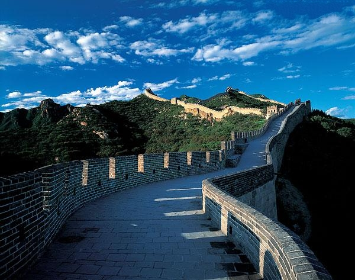
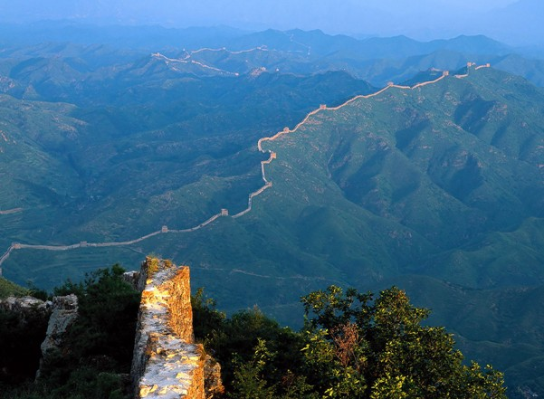
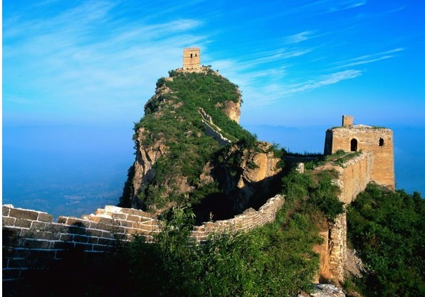
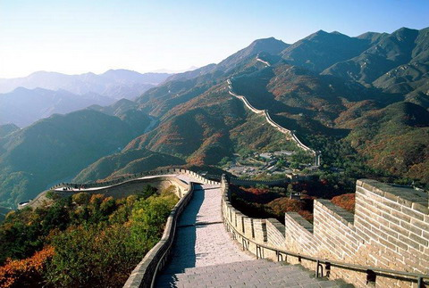

长城是中华文明的瑰宝，是世界文化遗产之一，也是与埃及金字塔齐名的建筑，还是人类的奇迹。在遥远的两千多年前，是劳动人民以血肉之躯修筑了万里长城。长城是中国古代人民智慧的结晶，也是中华民族的象征。
长城连续修筑时间之长，工程量之大，施工之艰巨，历史文化内涵之丰富，的确是世界其他古代工程所难以相比的。中国近代伟大的民主革命先驱孙中山评论长城时说：“中国最有名之工程者，万里长城也。……工程之大，古无其匹，为世界独一之奇观。”美国前总统尼克松在参观了长城后说：“只有一个伟大的民族，才能造得出这样一座伟大的长城。”所以说，长城作为人类历史的奇迹，1987年被列入《世界遗产名录》，当之无愧。
如此浩大的工程不仅在中国，就是在世界上，也是绝无仅有的，因而在几百年前就与罗马斗兽场、比萨斜塔等列为世界中古八大奇迹之一。
长城是古代中国在不同时期为抵御塞北游牧部落联盟侵袭而修筑的规模浩大的军事工程的统称。长城东西绵延上万华里，因此又称作万里长城。现存的长城遗迹主要为始建于14世纪的明长城，西起嘉峪关，东至辽东虎山，全长8851.8公里，平均高6至7米、宽4至5米。长城是我国古代劳动人民创造的伟大的奇迹，是中国悠久历史的见证。它与天安门，兵马俑一起被世人视为中国的象征
春秋战国时期，各国诸侯为了防御别国入侵，修筑烽火台，并用城墙连接起来，形成最早的长城。以后历代君王几乎都加固增修长城。它因长达几万里，故又称作“万里长城”。据记载，秦始皇使用了近百万劳动力修筑长城，总占全国人口的二十分之一。当时没有任何机械，全部劳动都由人力完成，工作环境又是崇山峻岭、峭壁深壑，十分艰难。长城东起山海关，西至甘肃嘉峪关，东至鸭绿江。从东向西行经10个省区市。长城的总长度为8842351米，其中人工墙体长度为6254239.662米，堑壕和天然形成长度为25942342.265米。长城始建于春秋战国时期，历时达2000多年，总长度达532万米以上。我们今天所指的万里长城多指明代修建的长城，它西起中国西部甘肃省的嘉峪关，东到中国东北辽宁省的鸭绿江边，长635万米。它像一条矫健的巨龙，越群山，经绝壁，穿草原，跨沙漠，起伏在崇山峻岭之巅，黄河彼岸和渤海之滨。古今中外，凡到过长城的人无不惊叹它的磅礴气势、宏伟规模和艰巨工程。长城是一座稀世珍宝，也是艺术非凡的文物古迹，它象征着中华民族坚不可摧永存于世的意志和力量，是中华民族的骄傲，也是整个人类的骄傲


